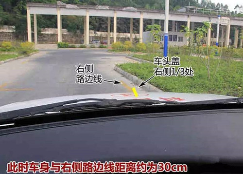
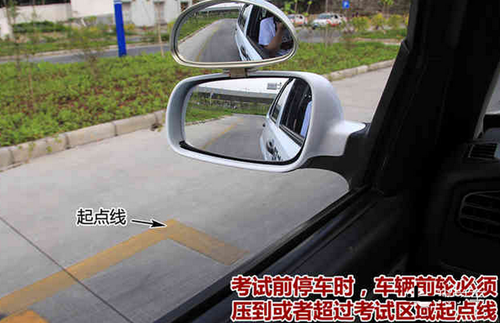
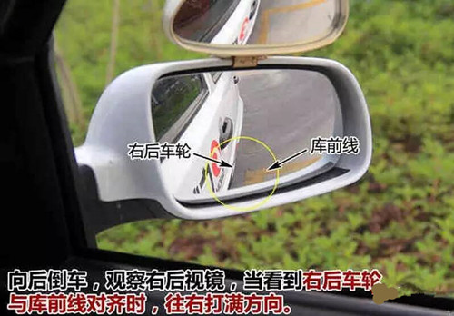
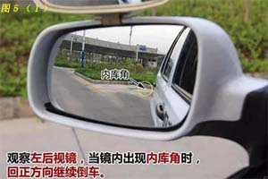
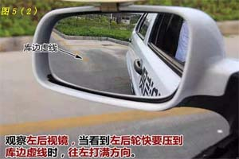
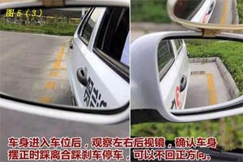
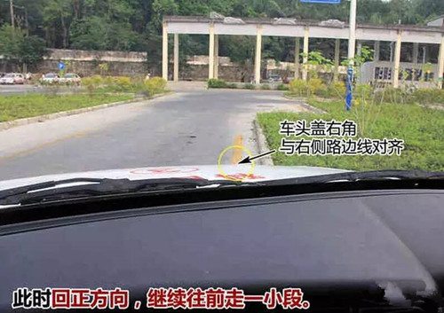
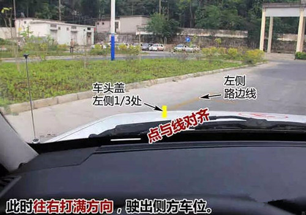

侧方停车
一、操作要求
车辆在库前方靠右停稳后，一次倒车入库。中途不得停车。车轮不轧碰车道边线、库位边线。
二、准备
 调整座椅位置，使踩离合和脚刹、油门时较舒适；
调整座椅位置，使踩离合和脚刹、油门时较舒适；
 左侧后视镜，上、下位置是把远处的地平线置于中央，左、右位置调整至车身占据镜面范围的四分之一；
左侧后视镜，上、下位置是把远处的地平线置于中央，左、右位置调整至车身占据镜面范围的四分之一；
 右侧后视镜，在调整上、下位置时镜中地面面积要较大，约占镜面的三分之二，左、右位置同样调整到车身占四分之一即可。
右侧后视镜，在调整上、下位置时镜中地面面积要较大，约占镜面的三分之二，左、右位置同样调整到车身占四分之一即可。
三、评判标准
 车辆入库停止后，车身出线，不合格；
车辆入库停止后，车身出线，不合格；
 未停车于库内，不合格；
未停车于库内，不合格；
 行驶中车轮触压车道边线，扣10分；
行驶中车轮触压车道边线，扣10分；
 起步未开左转向灯，扣10分；
起步未开左转向灯，扣10分；
 倒车未开右转向灯，扣10分；
倒车未开右转向灯，扣10分；
 中途停车，不合格。
中途停车，不合格。
四、操作方法
 车辆驶向侧方停车考试区。（车内语音提示：下一考试项目侧方停车，请开始——已进入侧方停车——请开始考侧方停车）
车辆驶向侧方停车考试区。（车内语音提示：下一考试项目侧方停车，请开始——已进入侧方停车——请开始考侧方停车）
 靠库：打右转向灯，让车头盖右侧1/3的位置压库边线，即可保持车身与库边线有30cm左右距离。
靠库：打右转向灯，让车头盖右侧1/3的位置压库边线，即可保持车身与库边线有30cm左右距离。

 停车：在靠库过程中，当左后视镜下沿盖过停车线，就可以踩离合踩刹车停车，此时车尾已过前库线，前车轮压停车线。
停车：在靠库过程中，当左后视镜下沿盖过停车线，就可以踩离合踩刹车停车，此时车尾已过前库线，前车轮压停车线。

 倒车：打右转向灯，挂倒挡，缓慢抬离合，当车子走动时左脚保持不动。观察右后视镜，当看到右后轮与前库线对齐时，往右打满方向。
倒车：打右转向灯，挂倒挡，缓慢抬离合，当车子走动时左脚保持不动。观察右后视镜，当看到右后轮与前库线对齐时，往右打满方向。

 往右打方向之后，观察左后视镜，当看到内库角时，向左回正方向(如图5(1))。然后观察左后轮，等到左后轮即将压到库边虚线时，往左打满方向，同时观察车身左右两侧库边线的角度，调整回方向的速度(如图5(2))。车头正时即踩离合刹车停车，回空挡，停车之后不能溜车。停车后可以不回正方向(如图5(3))，停车时间不能超过30秒。（车内语音提示：侧方停车准确）
往右打方向之后，观察左后视镜，当看到内库角时，向左回正方向(如图5(1))。然后观察左后轮，等到左后轮即将压到库边虚线时，往左打满方向，同时观察车身左右两侧库边线的角度，调整回方向的速度(如图5(2))。车头正时即踩离合刹车停车，回空挡，停车之后不能溜车。停车后可以不回正方向(如图5(3))，停车时间不能超过30秒。（车内语音提示：侧方停车准确）



 挂1挡，打左转向灯，直接起步，当看到左车角碰到左侧边线时，回正方向，等车头盖左侧1/3处碰到左侧边线时，往右打一圈方向，让车辆绕过库角驶出车位，等车身与路的方向平行时，往左回正方向，驶出侧方停车考试区域。
挂1挡，打左转向灯，直接起步，当看到左车角碰到左侧边线时，回正方向，等车头盖左侧1/3处碰到左侧边线时，往右打一圈方向，让车辆绕过库角驶出车位，等车身与路的方向平行时，往左回正方向，驶出侧方停车考试区域。

